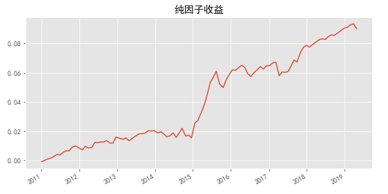

信息系数
即个股因子值与个股未来一期收益率的截面相关系数。
ic = mf.cal_ic(PB)
rank_ic = mf.cal_ic_rank(PB)
mf.draw_IC(ic)
分组回测
按因子值将市场所以个股分为10组等权组合，回测每组收益，观察因子的单调性
def group_test(factor,num = 10,period = 20):
...
res = mf.group_test(PB,num = 10,period = 20)
单边回测
示例：
def run(factor,types='t-close',positions=100,period=20,ascending=True,fees=0.002,group_num=10,all='long',holding_types='normal',draw=True,bench='all'):
'''
factor - 因子值矩阵
positions - 持股数，int
period - 换仓周期，int
fees - 手续费
draw - 绘图，bool
bench - 基准，all/HS300/ZZ500
'''
r = mf.run(-ma,period=10,fees=0.002,positions=100)
纯因子收益
pure_spread_ret = mf.pure_ret(ma,period=20)
